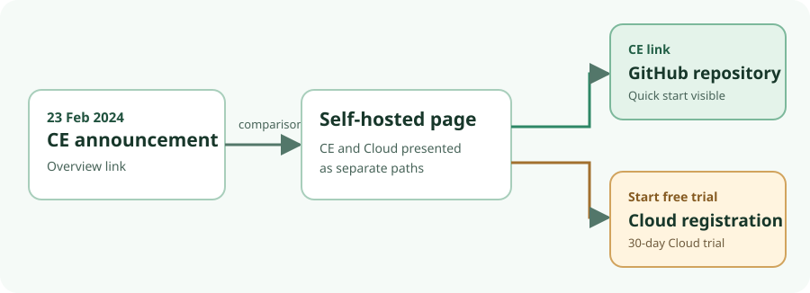

Announcement-to-landing check · 31 Oct 2026 · crawler view
Plausible CE announcement leads to a comparison, then two different next actions.
The Community Edition announcement links to Plausible's self-hosted comparison page. That page keeps a route to the CE repository, while its prominent “Start free trial” button goes to Cloud registration. The Cloud button is labelled as a Cloud trial. This is a choice between branches, not evidence of a false promise or of campaign performance.

What the saved view shows
- The first-party CE announcement, dated 23 February 2024 on the page, describes CE as free, self-hosted and AGPL-licensed. Its link labelled as a complete Cloud–CE differences overview resolved to the self-hosted comparison page.
- That comparison calls CE a free self-hosted release and distinguishes managed Cloud. Its CE link resolved to the Community Edition repository. Its prominent “Start free trial” button resolved to Cloud registration; nearby text identifies a 30-day Plausible Cloud trial, and the register page displayed the same trial offer in the crawler view.
- The repository's crawler-rendered README showed a Docker Compose example and quick start, with a visible clone command for
v3.2.1. It is a project page, not an installation result. The announcement's AGPL statement is a project claim, not a licence audit. A Compose repository MIT badge must not be treated as the CE application code licence.
What was checked—and what was not
| Observation | Boundary |
|---|---|
| Selected rendered text, crawler link identifiers and clicked destinations were saved for the announcement, comparison, repository and registration pages. | Selective extracts are not raw HTML, a full archive, a normal logged-out browser session or an independent live-DOM inspection. Direct HTTP retrieval failed at DNS in the research environment. |
| A local assertion accepted the saved announcement-to-comparison, CE-to-repository and Cloud-to-register destinations. | It checks consistency of the transcribed links, with exact HTTPS origin/path and no unreviewed query or fragment. It does not chase redirects itself. |
Replacing only the saved CE destination with /register made the assertion fail as expected. | This controlled fixture mutation shows that the assertion distinguishes the branches. It is not a discovered site error, site change or conversion test. |
No form was submitted, account created, traffic sent, CE installed or outcome measured. No query string appeared on the selected saved links; other links, variants and redirects were not covered.
Decision for a proposed promotion
If the intended next action is self-hosting, a reviewer can compare a direct CE-instructions destination with the comparison-page route, or check whether the CE link is unmistakable there. If the intended action is choosing between CE and Cloud, review both CTA labels and placement in the actual logged-out view. The announcement link itself promises a comparison, and the observed destination provides one; the Cloud-trial button is a separate, labelled offer.
Before approving either route, obtain a normal logged-out browser receipt for the intended geography and device, including rendered DOM, clicks and redirects or UTMs. Check variants or personalisation, accessibility, exact promise and CTA approval, and downstream outcomes separately. This single example does not establish a general mismatch rate or demand for an agent. A brief stating the expected next action, one manual browser check and a small saved-link assertion are sufficient as a lower-change first check.
First-party pages
- Introducing Plausible Community Edition
- Self-hosted comparison
- Community Edition repository
- Cloud registration
Page copy and links are as rendered in the 31 October 2026 crawler observation, not preserved 2024 page snapshots.